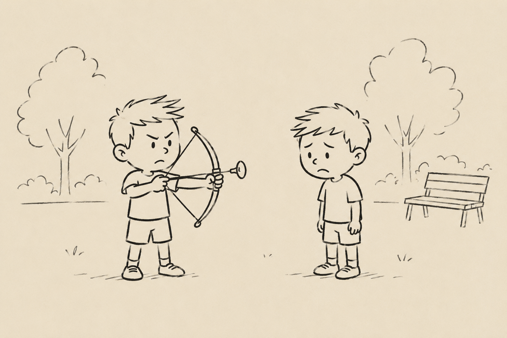

Mayores de cinco
El otro día, en el parque, había un niño con un arco de juguete. Nico quiso jugar con él, pero el niño le preguntó la edad y le dijo que no podía, que con el arco solo podían jugar los mayores de cinco años.
Nico se enfadó. Y yo le dije que dijera que tenía cinco aunque no los tuviera. No soy muy fan del utilitarismo. Pero aquel niño era imbécil.
Además, creo que la cruda realidad nos obliga a construir nuestra propia ley moral y actuar conforme a ella, no conforme a la norma establecida.
Sin embargo, al mismo tiempo, intento inculcarle una especie de moral trascendental. Que no actúe bien por miedo al castigo o por la expectativa de un premio, sino porque nuestro deber como seres humanos es ser buenos.
Y entonces llegan las elecciones andaluzas. Y las personas decentes nos encontramos, en mayor o menor medida, ante la duda de si votar de acuerdo con nuestras ideas —aunque la lideresa no nos convenciera— o incluso votar a “estos” para evitar que “los otros” entrasen en el gobierno.
Hay gente que optó por esa suerte de voto útil llevado al extremo. Yo, después de pensarlo, decidí que no iba a votar a “estos”.
Pero claro, pensándolo fríamente, después me di cuenta de que es muy fácil ser idealista cuando uno no se juega nada. Soy blanco, nacido aquí… Es muy fácil ser valiente cuando el pan que está en juego es el de otro.
Así que puede que mi voto fuese egoísta. Pero luego pensé otra cosa. Si suficiente gente actúa así —y de hecho eso ocurrió en muchas provincias—, entonces la pugna deja de ser entre “estos” y “aquellos”. Y pasa a ser entre “estos” y “los otros”.
Y quizá quien cae en ese utilitarismo cortoplacista no se da cuenta de que, intentando evitar un mal menor hoy, está desplazando el eje entero del tablero del mañana.
Así que quizá lo mejor sea dejar al niño imbécil con su arco y jugar a otra cosa. Porque una cosa es no tener arco. Y otra muy distinta que el parque acabe siendo suyo.
